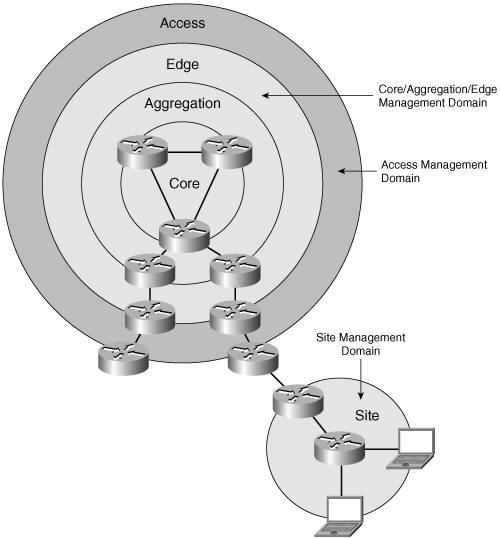

Network-Management Architecture
Network-management architecture somewhat follows the network architecture that was defined in Chapter 3: LAN/enterprise network (site), access, aggregation, and core.
Each of these network layers can identify a network-management domain. Often, each domain is under a different administration group. In Figure 10-1, network core, aggregation, and edge are under a single SP responsibility, and managed as a single entity. The access network and each remote site are managed separately.

Each domain is under the control of an operation support organization. This organization manages the network with the help of a network-management integrated system (see the section "Management Platforms"), a set of "individual" tools, or a combination of the two.
Network-management functions are detailed in the "FCAPS" framework specified by the ITU's Telecommunications Management Network (TMN) as follows:
Fault management The goal is to detect, report, notify users of, troubleshoot, and (to the extent possible) automatically fix network problems to keep the network running effectively. Fault management encompasses several key subservices: - - Traffic monitoring Its purpose is to gather traffic statistics and trigger alerts when anomalies are detected. Several tools can provide this service today with IPv6; for instance, Cisco NetFlow Collector (NFC), Cisco Network Analysis Module (NAM), Argus, and Nagios.
- - Topology monitoring The goal is to perform network topology discovery, and to monitor network resources such as interfaces, links, nodes, networks, and so on. Many tools can provide this service in IPv6 today: HP-OV, CiscoView, Weathermap, and so on.
- - Routing management The goal is to provide surveillance of the routing tables throughout the network. ASpath-tree, for instance, will provide this support for IPv6 Border Gateway Protocol (BGP) tables.
Performance management The goal is to measure and make available various aspects of network performance (network throughput, user response times, and line utilization). Cisco IOS IP service level agreements (IP SLAs, formerly Service Assurance Agent [SAA]), for instance, can achieve this service over IPv6 today with the help of an IPv4 over IPv6 tunnel. Services can be monitored, too, such as HTTP, FTP, RADIUS, DHCP, DNS, and any intelligent agent such as Cisco IOS Agent. Configuration management The goal is to monitor network and system configuration information so that the impact of various versions of hardware and software elements can be tracked and managed. Typical IPv6-enabled tools are CiscoWorks RME, HP-OpenView, and RANCID. Accounting management The goal is to measure resource utilization parameters so that individual or group uses on the network can be regulated and billed appropriately. Traffic monitoring, mentioned previously, and associated IPv6 tools (NFC, NAM, Argus, and so on) can be used for this purpose. Security management The goal is to control access to network resources according to policies so that the network cannot be sabotaged (intentionally or unintentionally) and sensitive information cannot be accessed by those without appropriate authorization.
Depending on the managed domain, the choice of management tools varies, even though management flows do exist between entities (as shown in Figure 10-1). Integrated management platforms are the norm in the core management domain, typically HP-OV coupled with CiscoWorks. Availability of IPv6 support on these NMSs becomes a key requirement for deploying IPv6 in the core. On the site-management domain, depending on the size of the site, the same NMS platforms or more-discrete tools may apply. Nagios, for instance, provides some IPv6 support for managing hosts and routers in a LAN. Many traffic- and performance-monitoring tools with IPv6 support are now available for use in this type of environment. All these tools and their applicability domain are reviewed in the subsequent sections.
 |